Lời Ngỏ
Có những chặng đường khi đi qua rồi, ta mới chợt nhận ra: hóa ra đó là quãng thời gian đẹp nhất của đời mình. Ba năm cấp ba – ba năm mang tên 12A1 – đã lặng lẽ trôi qua như thế, để lại trong tim mỗi chúng ta biết bao kỷ niệm không thể gọi tên trọn vẹn bằng lời. Ngày đầu bước vào lớp, chúng ta còn là những con người xa lạ, rụt rè và non nớt. Vậy mà qua từng tiết học, từng giờ ra chơi, từng lần cùng nhau cười vang hay lặng im vì mệt mỏi, chúng ta đã trở thành một gia đình. Có những niềm vui rất nhỏ nhưng nhớ mãi, có những giận hờn thoáng qua rồi lại thương nhau nhiều hơn. Có cả những lần yếu lòng, muốn bỏ cuộc, nhưng nhờ có bạn bè, có thầy cô, ta lại đủ dũng khí để bước tiếp. Bài báo tường này là nơi chúng mình gửi lại một phần thanh xuân – trong trẻo, vụng về nhưng chân thành. Mỗi dòng chữ là một nhịp đập ký ức, là tiếng gọi tha thiết của những ngày không thể quay lại. Mai này, khi mỗi người rẽ sang một con đường riêng, mong rằng chỉ cần nhìn thấy hai chữ 12A1, lòng ta vẫn sẽ khẽ rung lên vì thương, vì nhớ. Nhân dịp kỷ niệm 3 năm bên nhau của tập thể 12A1, chúng mình – Hương Giang và Thủy Tiên – xin được gửi lời cảm ơn sâu sắc đến thầy cô – những người đã lặng thầm chắp cánh cho ước mơ, và đến tất cả các bạn – những người đã cùng chúng mình viết nên một thanh xuân không thể nào quên. Nếu có một điều ước cho tuổi học trò, thì đó chính là: Ước gì thời gian có thể chậm lại, để chúng ta được ở bên nhau lâu hơn một chút… 12A1 – cảm ơn vì đã là thanh xuân của nhau 🤍
Gia Đình 12A1
Người lái đò: Thầy Trần Thế VInh
Người thầy kính yêu

Những mảnh ghép A1
Dòng Thời Gian Kỉ Niệm
Mỗi bước chân đi qua đều là một mảnh kí ức vô giá.

Ngày lễ 20/11/2023 đầu tiên của lớp
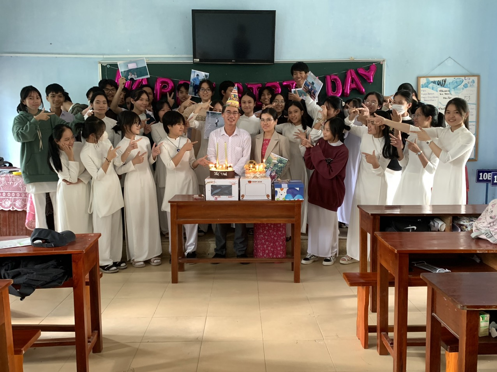Ngày sinh nhật của thầy 12/01/2024
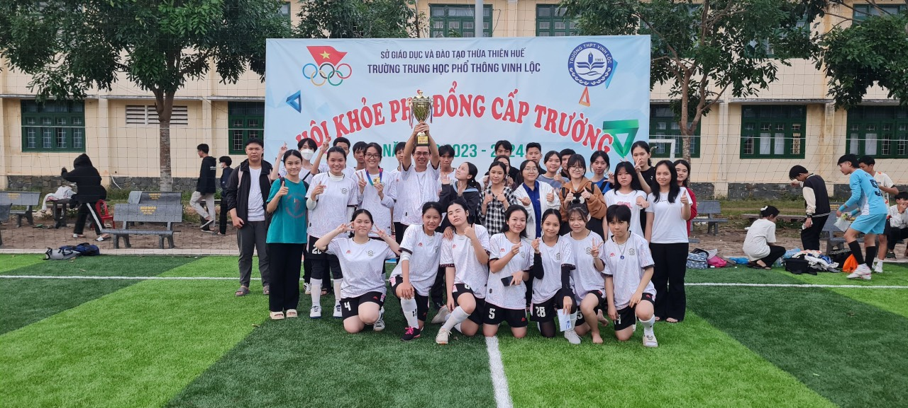Vô địch bóng đá nữ 2024
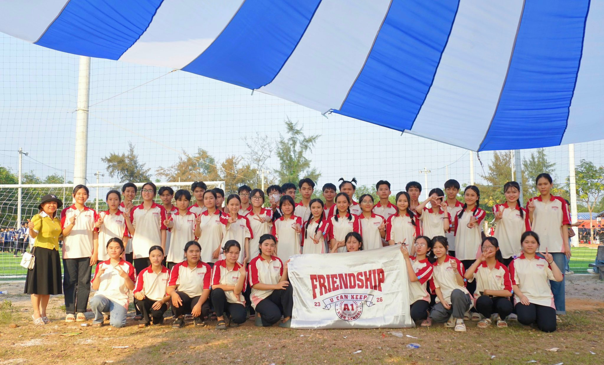Buổi cắm trại 26/03/2024 lần đầu của lớp
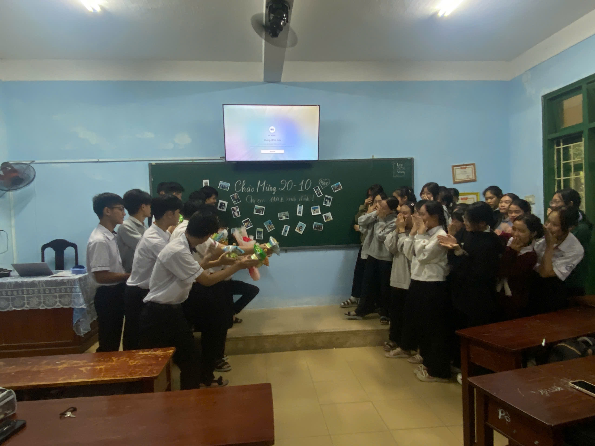Lần đầu các bạn nam tổ chức 20/10 cho các bạn nữ
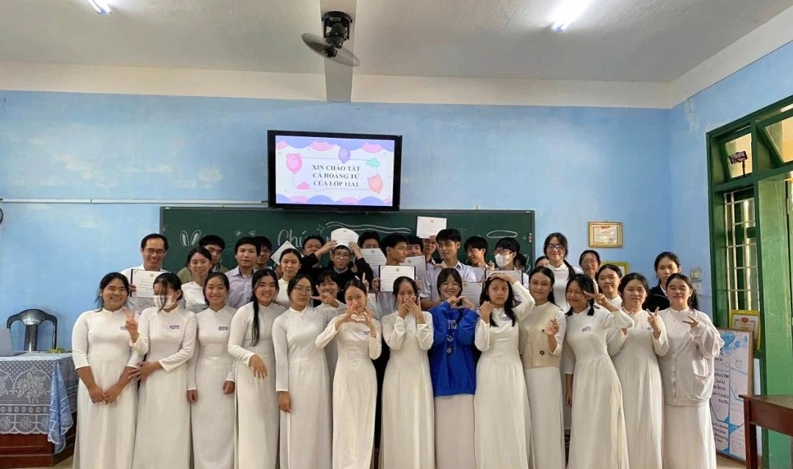Lần đầu các bạn nữ tổ chức 19/11 cho các bạn nam
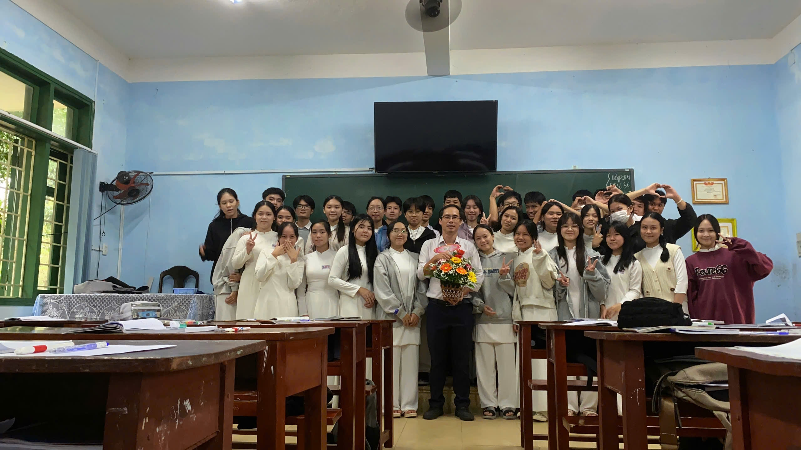Ngày nhà giáo năm thứ hai của lớp
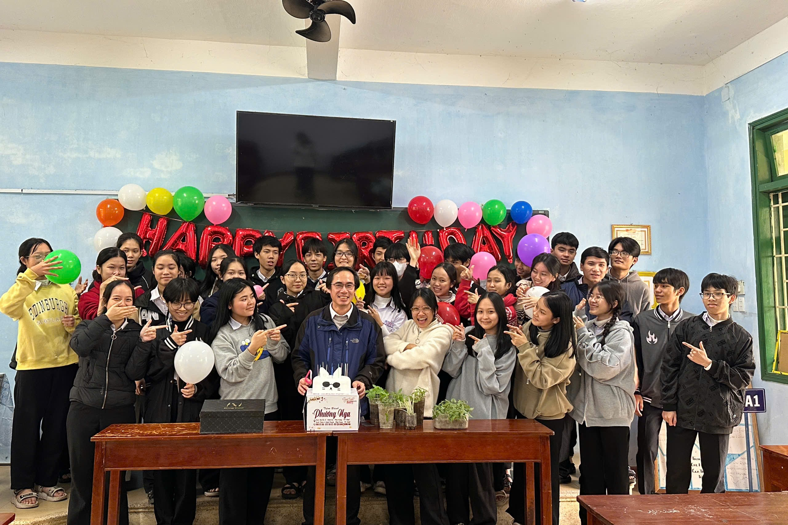Sinh nhật năm hai của thầy
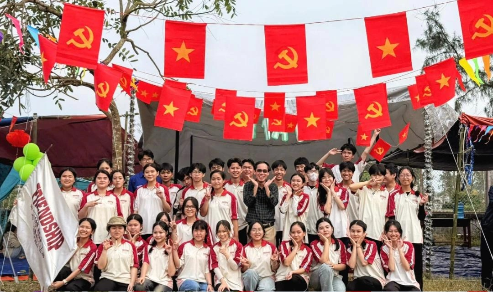Cắm trại 2025 của lớp
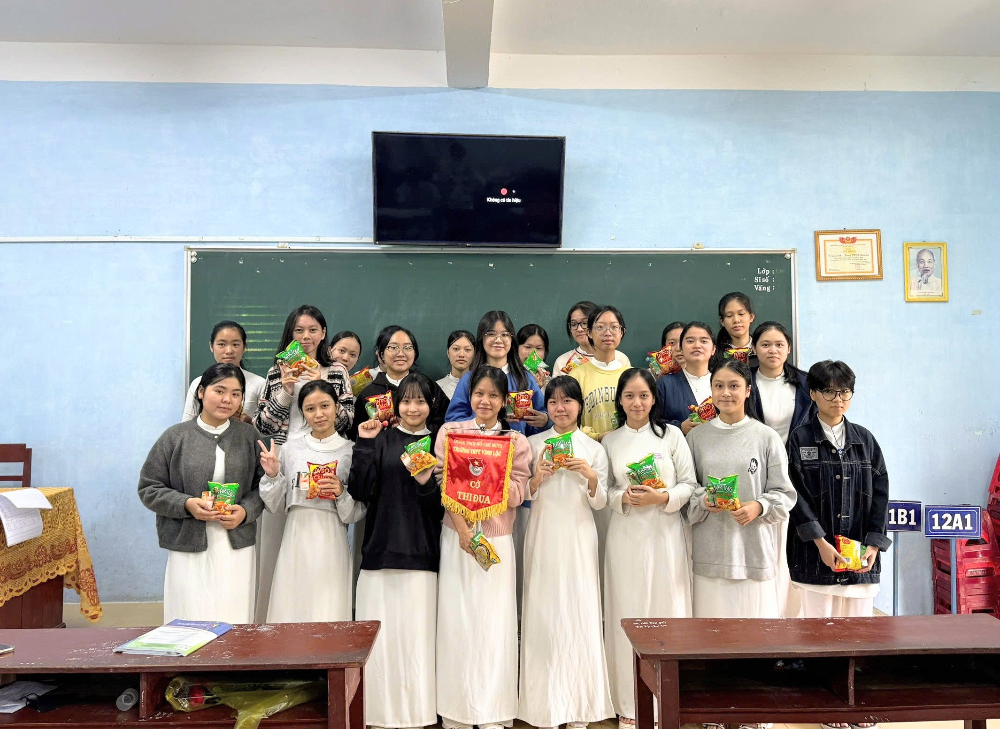Năm hai được các bạn nam tổ chức cho các bạn nữ
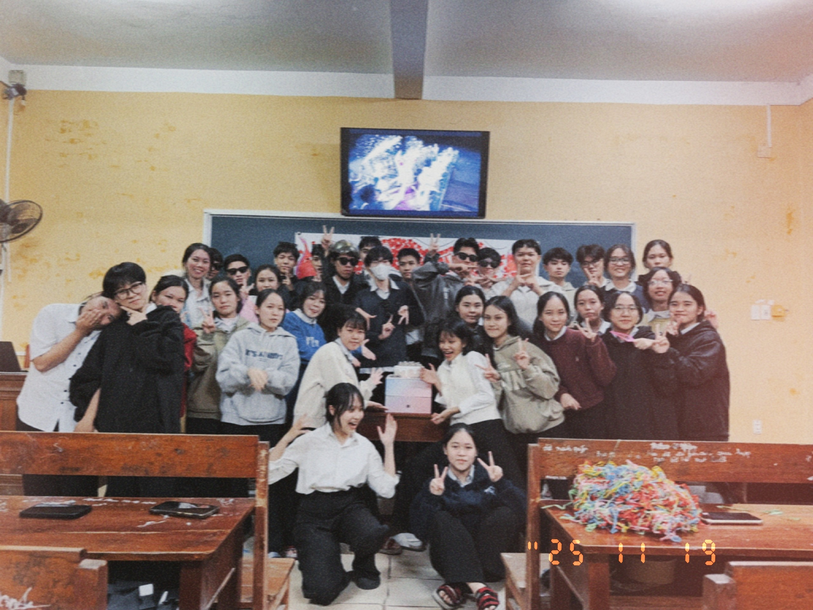Năm hai các bạn nữ tổ chức cho các bạn nam
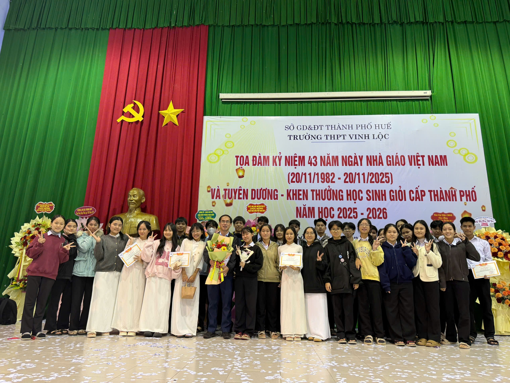Năm cuối cùng thầy với ngày lễ 20/11
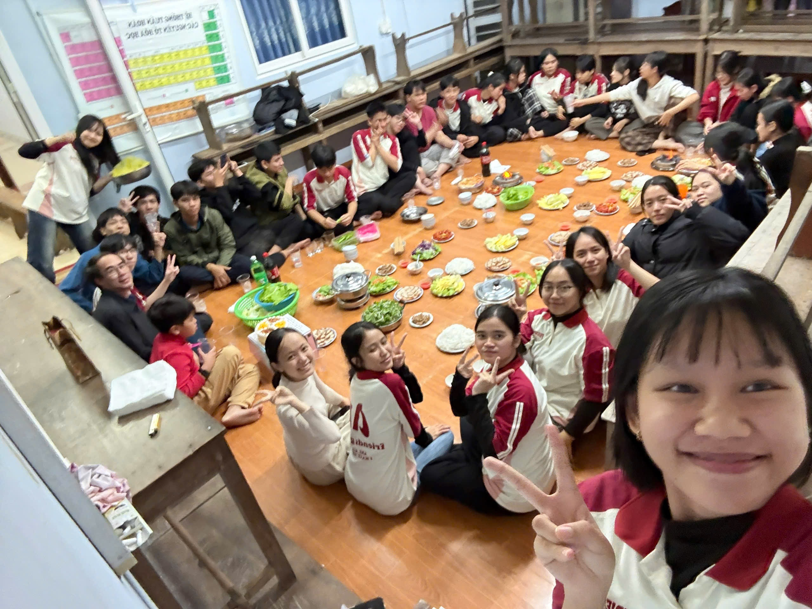Một ngày đầy vui vẻ của cả lớp ở nhà thầy
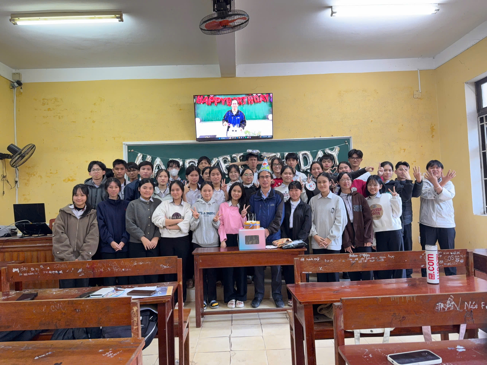Lần cuối được tổ chức sinh nhật cho thầy rồi
Có những điều chúng ta đã từng cùng nhau trải qua và bây giờ nó cũng chỉ còn là những kỉ niệm tính bằng năm
Clip: Những khoảnh khắc đáng nhớ
Những cảm xúc của ngày ra trường
Ngày ra trường đến nhẹ như một cơn gió, nhưng lại khiến lòng người chao đảo đến lạ. Sân trường hôm ấy vẫn quen thuộc như bao ngày, hàng phượng vẫn đứng im lặng lẽ, lớp học vẫn mở cửa đón nắng, vậy mà ai cũng hiểu: đây là lần cuối cùng chúng tôi đứng ở đây với tư cách là học sinh. Tiếng trống trường vang lên không còn giục giã vào tiết học, mà như một lời chia tay nghẹn ngào, gõ thẳng vào những miền ký ức chưa kịp gọi tên. Chúng tôi nhìn nhau, bỗng thấy thương đến nao lòng. Thương những gương mặt đã gắn bó suốt ba năm thanh xuân, thương những buổi học mệt nhoài nhưng đầy ắp tiếng cười, thương cả những lần giận hờn vụn vặt giờ đây chỉ còn là kỷ niệm. Có những cái nắm tay thật chặt, có những ánh mắt đỏ hoe không dám nói lời tạm biệt, bởi nói ra rồi, sợ rằng sẽ không kìm được nước mắt. Ngày ra trường không chỉ là kết thúc của một chặng đường, mà còn là khoảnh khắc chúng tôi buộc phải trưởng thành. Rời xa mái trường, rời xa vòng tay chở che của thầy cô, mỗi đứa sẽ bước đi trên một con đường riêng, mang theo trong tim hình bóng lớp học, bảng đen, phấn trắng và những người đã từng là cả thế giới. Dẫu mai này có đi xa đến đâu, có đổi thay thế nào, thì ký ức về ngày ra trường – ngày thanh xuân khép lại trong nước mắt và yêu thương – vẫn sẽ mãi là điều thiêng liêng nhất trong tim chúng tôi...
Gửi lại đây những lời xin lỗi chưa kịp nói, những lời cảm ơn chân thành dành cho những người bạn đã cùng ta lớn lên.
Lời Kết
Trang báo tường này khép lại, nhưng câu chuyện của 12A1 thì chưa bao giờ dừng lại. Những dòng chữ nơi đây không chỉ là kỷ niệm được lưu giữ, mà còn là minh chứng cho một quãng thanh xuân đã từng rực rỡ, chân thành và đầy yêu thương. Ba năm bên nhau, chúng ta đã cùng lớn lên, cùng vấp ngã, cùng học cách mạnh mẽ và biết trân trọng những điều bình dị nhất.Ngày mai, mỗi người sẽ bước đi trên một hành trình riêng, mang theo những ước mơ mới và cả những thử thách đang chờ phía trước. Nhưng mong rằng, khi cuộc sống khiến ta mệt mỏi, chỉ cần quay lại nơi này, ta vẫn có thể mỉm cười vì đã từng có một tập thể mang tên 12A1, từng có thầy cô tận tâm và những người bạn sẵn sàng đồng hành qua những năm tháng đẹp nhất của tuổi trẻ.Cảm ơn vì đã cùng nhau tạo nên một thanh xuân không hoàn hảo nhưng trọn vẹn.
Tạm biệt để trưởng thành – và hẹn gặp lại trong ký ức, nơi 12A1 mãi là một phần không thể quên